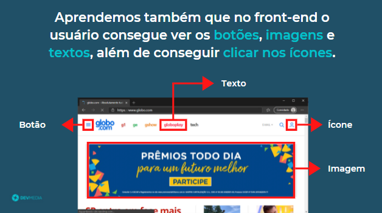
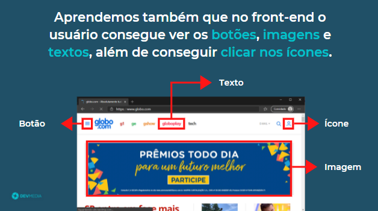


Veja no flow abaixo um resumo do que aprendemos sobre o front-end:
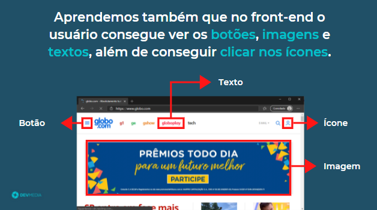
É no front-end que o usuário consegue ver os botões, imagens e textos, além de conseguir clicar nos ícones

 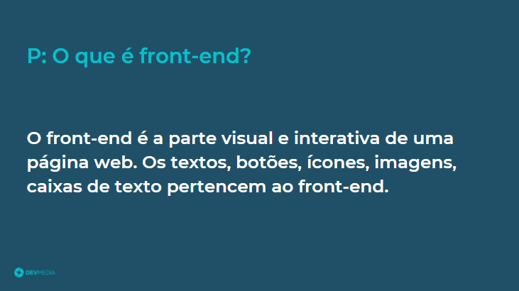
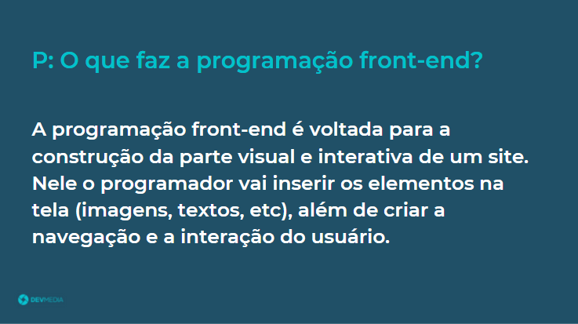
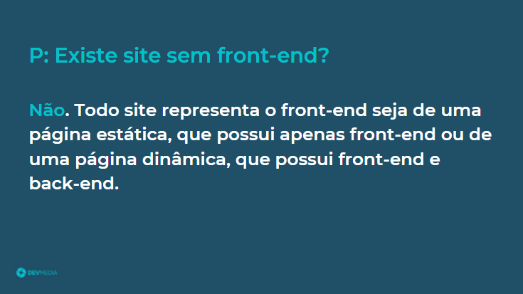
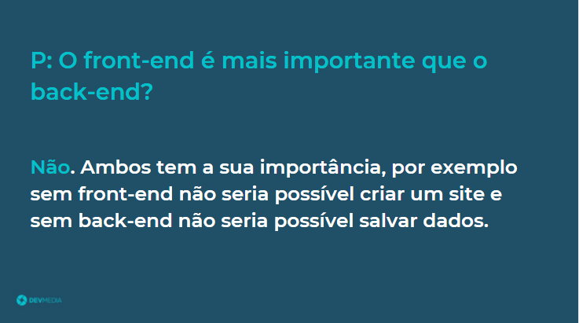
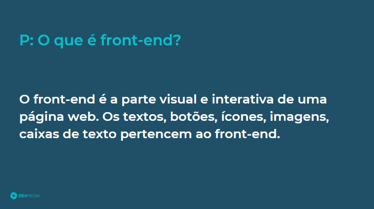
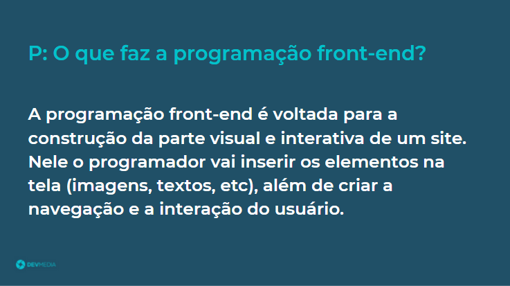
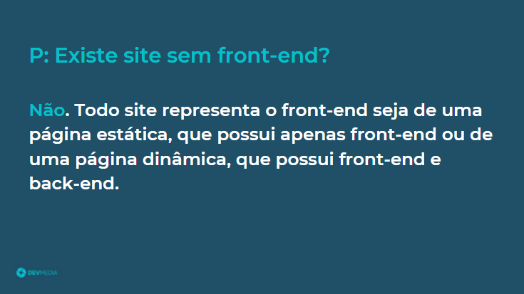
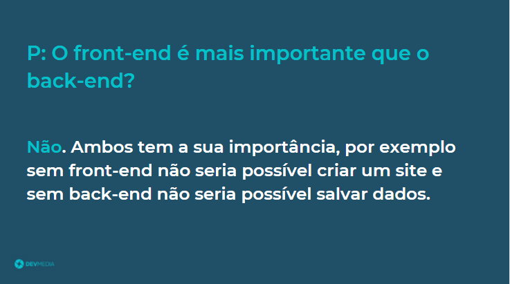

 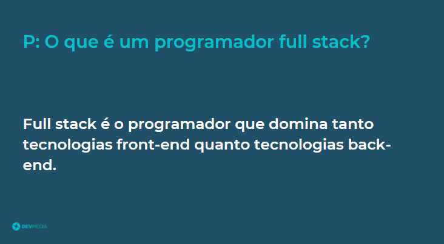
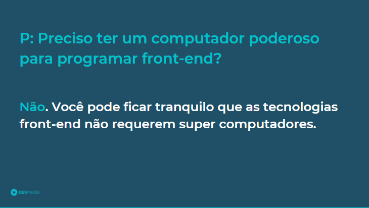
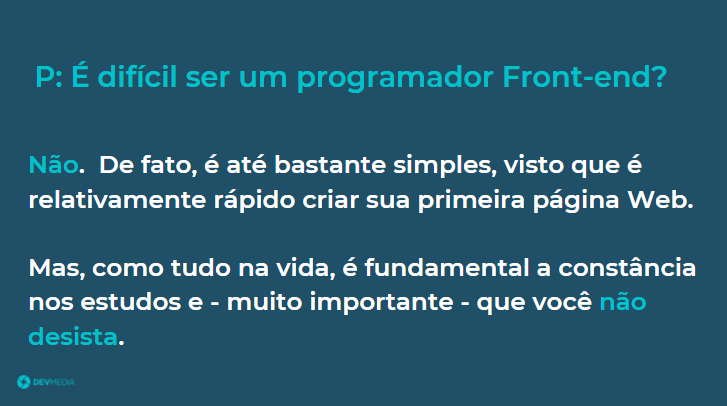
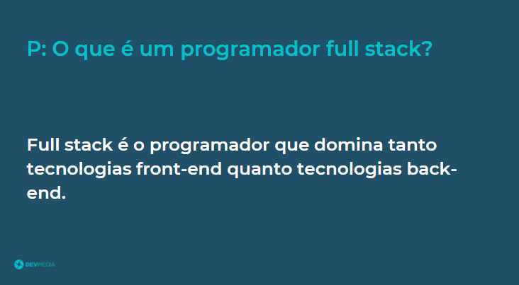
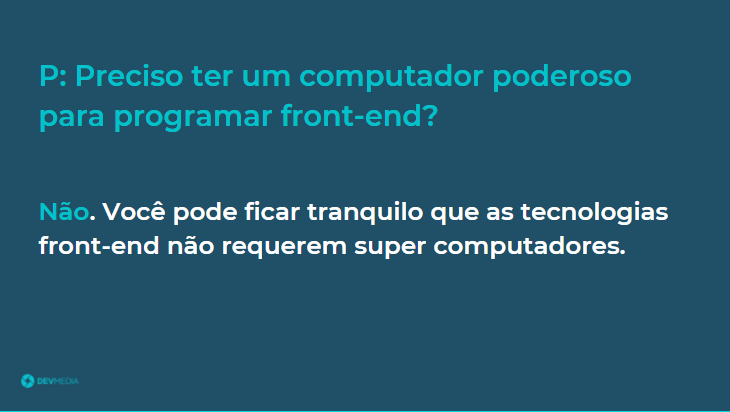
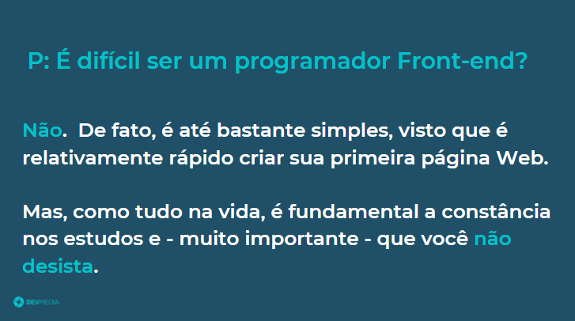


O próximo passo pode ser visto no flow abaixo:


As responsabilidades do front-end estão sempre ligadas à interação do usuário, por exemplo, é responsabilidade do front-end exibir e coletar informações. Já o back-end tem a responsabilidade de armazenar e fornecer informações para o front-end